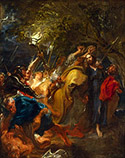

From
the collection

Anthony van Dyck
The Betrayal of Christ
About 1621
Oil on canvas
H.55-7/8 x W.44-1/2 in.
The William Hood Dunwoody Fund and the Ethel Morrison and John R. Van
Derlip Funds
This painting illustrates a story from the Bible. In the Garden of Gethsemane, Christ's disciple Judas Iscariot betrayed him to Roman soldiers by identifying him with a kiss. Here, the soldiers surge toward Christ, with Judas, wearing a yellow robe, in the lead. Meanwhile, in the lower left corner, another disciple, Peter, cuts off the ear of Malchus, the servant of a high priest who also had conspired against Christ. Amid the upheaval, Christ's tall, serene figure provides the only calm in the composition.
Anthony
van Dyck emphasized the scene's violence and treachery by using bold
diagonals and flickering light effects. The brushwork, too, with its
energetic, thickly applied pigments, reinforces the dynamism of the
figures and the tangle of branches overhead. The eerie light from the
torches and crescent moon contributes to the disturbing sense of frenzy
as well.*